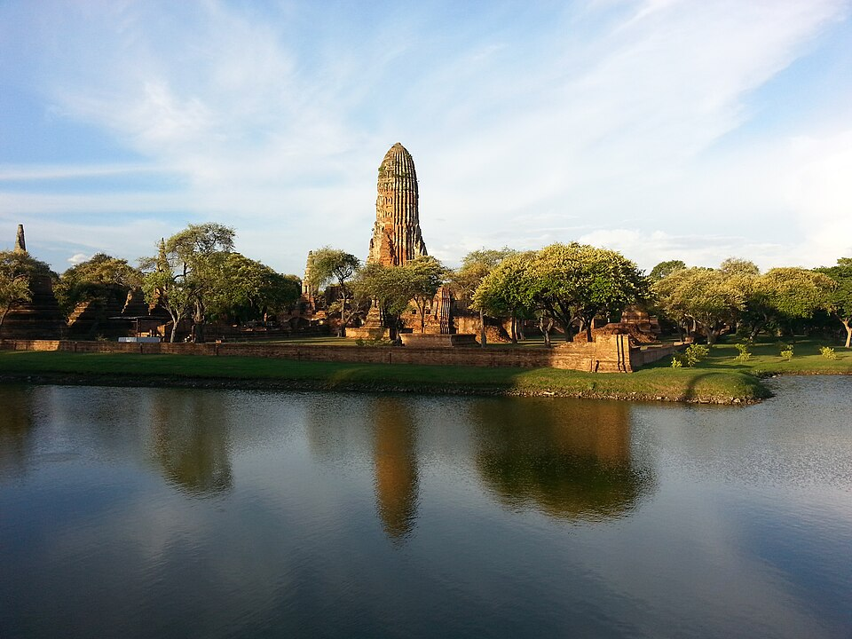
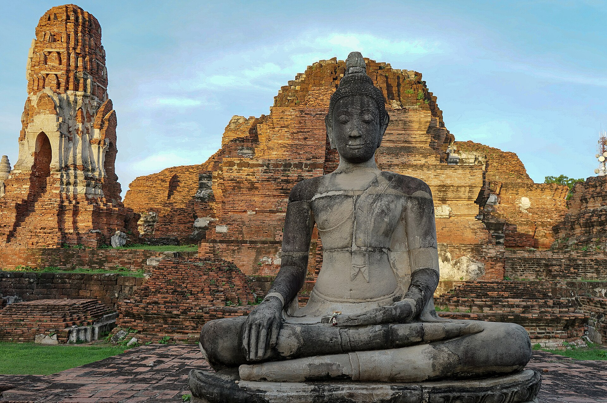

GEOGRAPHY
แผนผังและภูมิศาสตร์ของเมือง
กรุงศรีอยุธยาตั้งอยู่บนพื้นที่เกาะเมือง ซึ่งมีแม่น้ำสำคัญล้อมรอบ ได้แก่ แม่น้ำเจ้าพระยา แม่น้ำป่าสัก และแม่น้ำลพบุรี ลักษณะทางภูมิศาสตร์นี้มีส่วนสำคัญ ต่อการป้องกันเมือง การคมนาคม และการค้าทางน้ำ

จากราชธานีแห่งสยาม สู่เมืองมรดกทางประวัติศาสตร์ ที่ยังคงบอกเล่าเรื่องราวของอดีต ผ่านโบราณสถาน ศิลปกรรม และวิถีชีวิตของผู้คน
กรุงศรีอยุธยาสถาปนาขึ้นใน พ.ศ. 1893 โดยสมเด็จพระรามาธิบดีที่ 1 หรือพระเจ้าอู่ทอง บริเวณพื้นที่ที่มีแม่น้ำสำคัญล้อมรอบ ทำให้เมืองมีความเหมาะสมทั้งด้าน การตั้งถิ่นฐาน การคมนาคม และการป้องกันเมือง
ตำแหน่งที่ตั้งของอยุธยาทำให้เมือง สามารถเชื่อมโยงกับพื้นที่ต่าง ๆ ของลุ่มแม่น้ำเจ้าพระยา รวมถึงเส้นทางการค้าระหว่าง ภายในภูมิภาคกับดินแดนต่างประเทศ

สมเด็จพระรามาธิบดีที่ 1 หรือพระเจ้าอู่ทอง สถาปนากรุงศรีอยุธยาขึ้น เป็นราชธานี
กรุงศรีอยุธยามีการขยายอำนาจ และสร้างความสัมพันธ์กับเมืองต่าง ๆ จนกลายเป็นหนึ่งในศูนย์กลางสำคัญ ของภูมิภาค
อยุธยากลายเป็นเมืองนานาชาติ มีการติดต่อค้าขายกับชาวต่างชาติ จากหลายพื้นที่ทั้งเอเชีย และยุโรป
กรุงศรีอยุธยาสิ้นสุดบทบาท การเป็นราชธานีหลังเกิดสงคราม และการทำลายเมือง
กรุงศรีอยุธยาตั้งอยู่บนพื้นที่เกาะเมือง ซึ่งมีแม่น้ำสำคัญล้อมรอบ ได้แก่ แม่น้ำเจ้าพระยา แม่น้ำป่าสัก และแม่น้ำลพบุรี ลักษณะทางภูมิศาสตร์นี้มีส่วนสำคัญ ต่อการป้องกันเมือง การคมนาคม และการค้าทางน้ำ
พระมหากษัตริย์ใช้กรุงศรีอยุธยา เป็นศูนย์กลางในการบริหารราชอาณาจักร มีพระราชวังและสถานที่สำคัญ อยู่ภายในเมือง
วัดและศาสนสถานจำนวนมาก ถูกสร้างขึ้นเพื่อเป็นศูนย์กลาง ทางพระพุทธศาสนา และเป็นสถานที่ประกอบพิธีกรรม
ทำเลที่ตั้งบริเวณแม่น้ำ ช่วยให้เรือสินค้าเดินทาง เข้าออกเมืองได้สะดวก และเชื่อมโยงกับเส้นทางการค้าต่างประเทศ
สถาปัตยกรรม ประติมากรรม และงานช่างของอยุธยา สะท้อนการผสมผสาน ของวัฒนธรรมหลากหลาย

ด้วยตำแหน่งทางภูมิศาสตร์ ที่เชื่อมโยงเส้นทางแม่น้ำ และทะเล กรุงศรีอยุธยา จึงกลายเป็นเมืองการค้า ที่มีผู้คนจากหลายพื้นที่เดินทางเข้ามา
มีการติดต่อกับพ่อค้าจากจีน ญี่ปุ่น อินเดีย เปอร์เซีย รวมถึงประเทศในยุโรป ทำให้เกิดการแลกเปลี่ยนสินค้า ภาษา ความรู้ และวัฒนธรรม
ความหลากหลายของผู้คน ทำให้กรุงศรีอยุธยามีลักษณะ เป็นเมืองนานาชาติที่สำคัญ แห่งหนึ่งของภูมิภาค
ศิลปกรรมสมัยอยุธยามีเอกลักษณ์โดดเด่น ทั้งด้านสถาปัตยกรรม ประติมากรรม จิตรกรรม และงานช่าง โดยได้รับอิทธิพลจากหลายวัฒนธรรม และพัฒนาจนเกิดเป็นรูปแบบ เฉพาะของอยุธยา

วัดและโบราณสถานหลายแห่ง แสดงให้เห็นถึงความสามารถ ของช่างในสมัยอยุธยา ทั้งการก่ออิฐ การสร้างปรางค์ เจดีย์ และพระพุทธรูป
รูปแบบศิลปกรรมเหล่านี้ กลายเป็นมรดกสำคัญ ที่ช่วยให้คนรุ่นปัจจุบัน เข้าใจถึงความเจริญรุ่งเรือง ของราชธานีในอดีต
แม้กรุงศรีอยุธยาจะสิ้นสุดการเป็นราชธานี แต่โบราณสถานจำนวนมากยังคงเป็นหลักฐาน ที่สะท้อนถึงประวัติศาสตร์ และความรุ่งเรืองของเมืองในอดีต


กรุงศรีอยุธยาไม่ได้เป็นเพียงเรื่องราว ของราชธานีในอดีตเท่านั้น แต่ยังเป็นแหล่งเรียนรู้ทางประวัติศาสตร์ ศิลปวัฒนธรรม และสถาปัตยกรรมที่สำคัญ
โบราณสถานและพื้นที่ทางประวัติศาสตร์ ช่วยให้คนรุ่นปัจจุบันสามารถศึกษา ร่องรอยของสังคมในอดีต และเข้าใจถึงความสัมพันธ์ระหว่าง ผู้คน การเมือง การค้า ศาสนา และวัฒนธรรมที่หล่อหลอมกรุงศรีอยุธยา